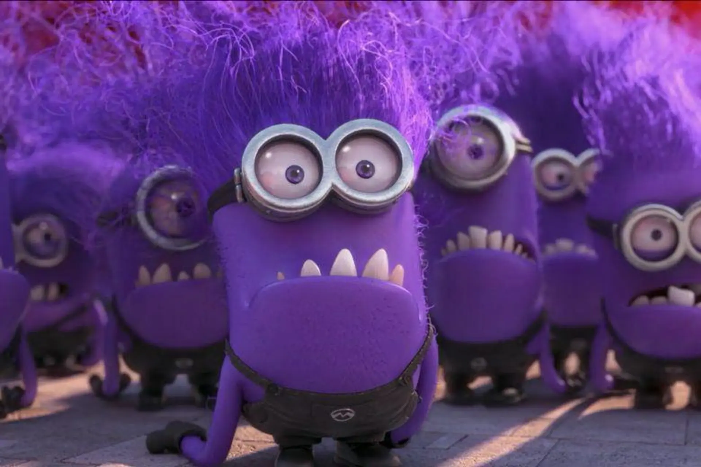

Aksi Kocak Minions
Di antara tingkah laku lucu dan aksi kocak Minions di Despicable Me 2 (2013), momen transformasi mereka menjadi monster ungu adalah salah satu yang paling ikonik dan menghibur. Adegan ini dimulai ketika Gru ditugaskan untuk menangkap penjahat baru bernama El Macho (Benjamin Bratt). El Macho memiliki senjata rahasia yang dapat mengubah makhluk hidup menjadi monster ungu raksasa.
Tanpa sengaja, sebagian besar Minions Gru terkena senjata ini dan berubah menjadi monster ungu yang mengamuk. Para Evil Minions ini bertingkah laku liar dan destruktif, membuat kekacauan di seluruh kota. Untungnya, Gru berhasil menemukan penawarnya dan mengubah Minions kembali menjadi makhluk kuning yang menggemaskan.
